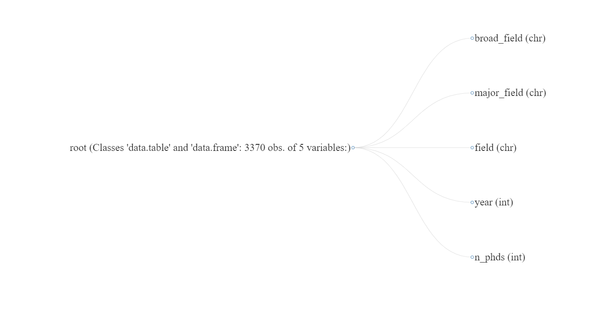
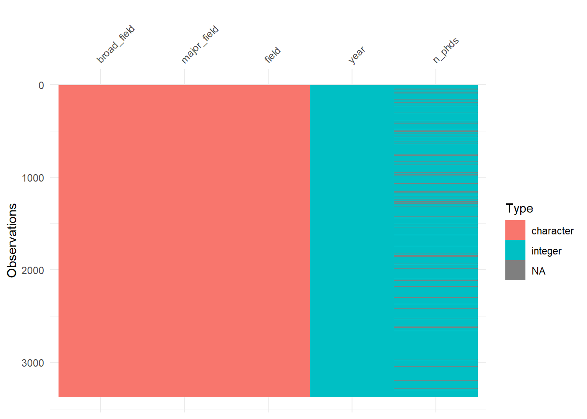
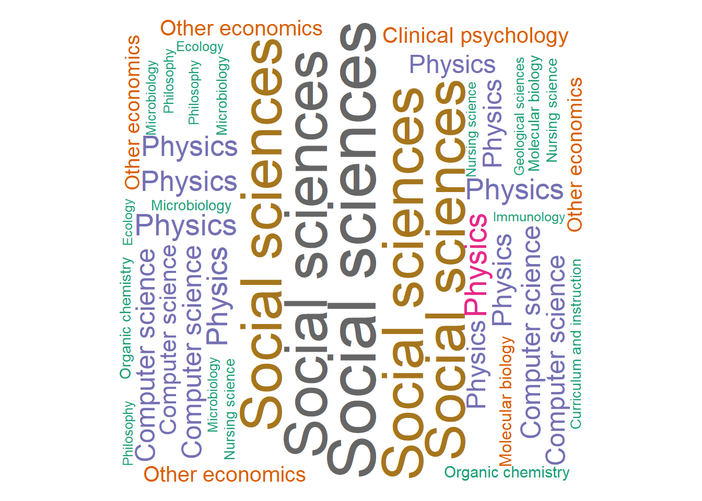
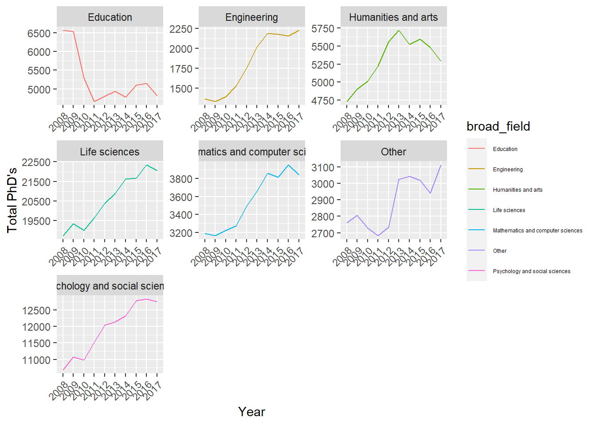
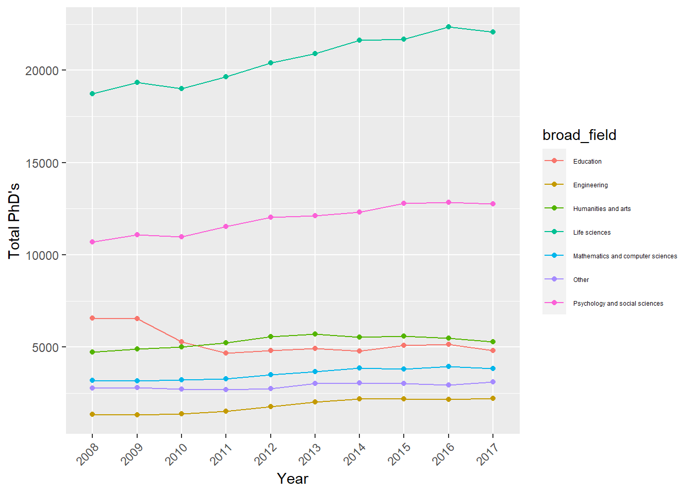

Is the PhD degree loosing its value?
INTRODUCTION

Have you ever wondered what pushes people to pursue a PhD? According to the Guardian, most people start a PhD because of their thirst for knowledge. However, there are other opportunities to drive research projects outside academia. Sometimes having obtained a PhD provides access to these research opportunities.
USA ranks first in academic education which also motivates and pushes hoards of international students to pursue excellence and PhD’s in that country (The Guardian, 2012).
There are other reasons that motivate students to continue their education to PhD level. Harking back to a time when these diplomas were reserved for a minuscule segment of the population, the doctoral degree is a seen as a prestige marker, the recognition of one’s exceptional talents and the certificate of belonging to the intellectual elite. The non-material rewards that a PhD is supposed to bring, at least theoretically, are connected to social standing; PhDs can be used as a vehicle for upwards social mobility, and for the fulfillment of personal and family ambitions. (The Guardian, 2012)

PURPOSE AND TARGET AUDIENCE
In Unites States of America, PhD’s are offered across countless majors and specializations. This blog explores the various fields in USA across which PhD’s are offered and how the trend of PhD’s awarded has evolved over time. If you are someone trying to get more insights into the PhD market of USA, or if you are planning on pursuing a PhD in the near future or just are simply curious, you are at the right place!
DATA SOURCE AND STRUCTURE
DATA SOURCE
The data is for this blog comes from NSF website which talks in detail about the doctrates in Unites States.
DATA STRUCTURE
The dataset contains details on the number of PhD’s awarded in the US from 2008 to 2017. The following columns are present in the dataset :
- broad_field : this talks about the highest level field of study.
- major_field : this drills down one level into the broad field and mentions the major in that broad field.
- field : this is the innermost level in the study which details the field within that major.
- year : the year in which the PhD was awarded.
- n_phds : the number of PhD’s awarded for that year in that field.


Analysis
Code
set.seed(12345)
wordcloud(
words = data_2$field,
freq = data_2$n_phds,
min.freq = 1,
max.words = 200,
random.order = FALSE,
rot.per = 0.35,
colors = brewer.pal(8,"Dark2")
)
A student has a wide variety of fields to choose from when it comes to pursuing a PhD as is evident from Figure 1. Whether its a technical course, or non technical course, the range of fields in which PhDs can be pursued are wide and immense.
This blog in no way aims to influence any decision towards pursuing or not pursuing a PhD in any respective field in US. It is simply to shed some slight on the evolution and field wise information on this doctorate degree for an in-depth understanding of the same.
Overall PhD trend over the years
Let us first look at how the overall PhD trend has been in the US over these years by the broad_field.
Code
data_2 %>%
ggplot(aes(x = year, y = total_n, group = broad_field, colour = broad_field)) +
geom_line() +
theme(axis.text.x = element_text(angle=45, hjust = 1)) +
theme(legend.text = element_text(size = 4.5)) +
labs(x = "Year", y = "Total PhD's") +
facet_wrap(~broad_field, scales = "free")
From the graph Figure 2 , we can see the overall trend of the PhD’s awarded in USA over the years 2008-2017 by the broad field. Although , it is generally an upward trend for most of the fields, we can see that for the Education field, there has been an exponential fall in the PhD’s awarded specifically from 2008 to 2011 there was a drastic drop. Why did this happen? let us try to understand this in a bit more detail.
Why did Education PhDs fall?
Experts say the structure of the American higher education system could be the cause according to (Education,2019). And as a growing number of people seek graduate degrees, many more companies are favoring those people for employment.
In the past, most doctoral students entered postdoctoral positions. In these positions, they would usually do research in their fields while also teaching. This has long been the first step toward being chosen for a tenured position, one in which a college or university offers a lifetime position for teaching and research.
The case of the Education, this has changed over the last 30 years. There has been a move away from the teaching fields towards STEM fields because of the belief that they lead to better paying jobs. As a result, colleges and universities are employing fewer education professors (Education,2019).
Broad Field Dominance
Let us now try to look at which broad field has been consistently dominating the PhD sector in USA.
Code
data_2 %>%
filter(broad_field %in% c("Education", "Engineering", "Humanities and arts", "Life sciences", "Mathematics and computer sciences", "Other", "Psychology and social sciences")) %>%
ggplot(aes(x = year, y = total_n, colour = broad_field, group = broad_field)) +
theme(axis.text.x = element_text(angle=45, hjust = 1)) +
theme(legend.text = element_text(size = 4.5)) +
labs(x = "Year", y = "Total PhD's") +
geom_line() +
geom_point()
From the graph Figure 3, it is evident that throughout these years, Life sciences field has the most PhD’s. It has consistently dominated the PhD market in USA whereas Engineering has been consistently low.
One particular year alone, American colleges and universities awarded 12,781 PhDs in the life sciences—about 23% of all doctorates awarded in the US that year. However according to Areo , This is unsustainable: the market simply cannot absorb that many PhD graduates. And yet, this reality may not have sunk in for the latest batch of students. In a 2019 Nature survey of graduate students in STEM fields around the globe, 56% picked academia as their first-choice career.
At the top
Diving into Life sciences field in detail :
From the graph Figure 4, we can see that Biological and Biomedical sciences in the Life sciences field has been consistently getting the highest PhD’s.
The explosive increase in the number of postdocs in biomedical fields is puzzling for many science policymakers. PhDs in biomedical fields has increased over time, and it is estimated that there is approximately only one tenure-track position in the US for every 6.3 PhD graduates, which means the rest need to get jobs outside academia or stay in lower-paid temporary positions (Ghaffarzadegan, 2021)
The other end
Looking at Engineering which is on the other end of the spectrum :
For engineers, unemployment numbers are back to what they were before the recession hit in 2008, according to IEEE Spectrum. Unemployment was 1.8% in pre-recession October 2008, and 2.8% in recession-encumbered October 2010. As an aside, the numbers uncannily mirror the aftermath of the dot-com bubble. In April 2001, before the worst of the bust, unemployment was 1.7%, but it had increased to 2.7% in October 2003.
Code
eng <- data %>%
filter(broad_field=="Engineering") %>%
select(field, year, n_phds) %>%
group_by(field) %>%
summarise(Total = sum(n_phds)) %>%
drop_na() %>%
arrange(desc(Total))
datatable(eng, options = list(),
caption = "Table: Total PhDs by engineering field") %>%
formatStyle("Total", border = '1px solid #ddd',
background = styleColorBar(eng$Total, "orange", -90)) %>%
formatRound("Total", digits = 0)The table Figure 5 above shows the field in engineering that has the most to least PhD’s. Computer Science has the highest PhD’s , which is not surprising as Silicon Valley in the US has tech giants with enough workforce opportunities in that domain.
Towards the least side, we see that Communication Engineering has the lowest PhD’s awarded. On further research, it is found that in the US, the average salary of a communication engineer is far lower than any other engineering discipline. This can be one of the reasons for the low PhD persuasion in this field. However, we can safely say that there is a shortage of engineering doctrates in the US.
The U.S. probably doesn’t need more humanities doctorates, but the opposite is true for STEM graduates. Its just that more jobs need to be created to justify them.
Has Mental Health Picked up any pace?
Because, mental health awareness is on the rise all over the world, Let us try to see how the various Psychology fields fare in terms of PhDs awarded :
Code
psy <- data_2 %>%
filter(broad_field=="Psychology and social sciences")
bp <- qplot(major_field, n_phds, data = psy, geom = "boxplot", fill = major_field)
ggplotly(bp)In the Figure 6 above, we can see that in the broad field of Psychology and Social Sciences, the Psychology major has the highest number of PhD’s. This is also an indication that more people might be becoming aware of mental health and want to gain further knowledge into understanding the same.
Another interesting thing is that after the Covid-19 pandemic hit, the importance and attention towards Mental Wellness has increased drastically and more people have become aware about mental well-being throughout the world.
What about the number game?
Finally, to understand the field of Mathematics and its PhD breakdown,
Code
maths <- data_2 %>%
filter(broad_field=="Mathematics and computer sciences")
p <- maths %>%
ggplot(aes(fill=major_field, y=n_phds, x=year)) +
geom_bar(position="dodge2", stat="identity") +
theme(axis.text.x = element_text(angle=45, hjust = 1)) +
theme(legend.text = element_text(size = 4.5)) +
scale_fill_viridis(discrete = T) +
labs(x = "Year", y = "Mathematics PhDs by major")
ggplotly(p)Figure 7 above shows the yearly breakdown of the Mathematics PhD based on the majors. As is evident, Computer and Information sciences has been dominating the PhD game since 2008 and is consistently higher than Mathematics and Statistics major in terms of the PhDs awarded in the major. One of the reasons for this dominance is the technological boom where all the students are catapulted towards the Computer and Tech related courses for pursuing a PhD.
Interested in pursuing a PhD in the USA?! Here are some resources to help you out!
A complete guide
Why USA?
The process
Conclusion :
Overall, from the summaries and trends above, it is evident that although PhDs are a highly coveted degree in the United States, however, one cannot ignore that the standards of the universities are getting higher and the people enrolling in the Doctorates programmes is on the decline as well. The question isn’t “why” , but the question lies in “what” can be done to improve the condition , specially when we talk about certain majors loosing the sheen of their PhD numbers.
References :
C. Sievert. Interactive Web-Based Data Visualization with R, plotly, and shiny. Chapman and Hall/CRC Florida, 2020.
H. Wickham. ggplot2: Elegant Graphics for Data Analysis. Springer-Verlag New York, 2016.
Hadley Wickham, Romain François, Lionel Henry and Kirill Müller (2022). dplyr: A Grammar of Data Manipulation. R package version 1.0.8. https://CRAN.R-project.org/package=dplyr
RStudio Team (2020). RStudio: Integrated Development for R. RStudio, PBC, Boston, MA URL http://www.rstudio.com/.
Wickham H, Averick M, Bryan J, Chang W, McGowan LD, François R, Grolemund G, Hayes A, Henry L, Hester J, Kuhn M, Pedersen TL, Miller E, Bache SM, Müller K, Ooms J, Robinson D, Seidel DP, Spinu V, Takahashi K, Vaughan D, Wilke C, Woo K, Yutani H (2019). âWelcome to the tidyverse.â Journal of Open Source Software, 4(43), 1686. doi: 10.21105/joss.01686 (URL: https://doi.org/10.21105/joss.01686).
VOA. 2022. US Doctoral Degrees May Be Losing Their Appeal. [online] Available at: https://learningenglish.voanews.com/a/us-doctoral-degrees-may-be-losing-their-appeal/4747852.html [Accessed 15 October 2022].
Yihui Xie (2022). bookdown: Authoring Books and Technical Documents with R Markdown. R package version 0.26.
Yihui Xie, Joe Cheng and Xianying Tan (2022). DT: A Wrapper of the JavaScript Library ‘DataTables’. R package version 0.24. https://CRAN.R-project.org/package=DT
Segesten, A., 2022. Not for love or for money – why do a PhD?. [online] the Guardian. Available at: https://www.theguardian.com/higher-education-network/blog/2012/may/03/phd-doctorate-higher-education-love-money [Accessed 9 October 2022].
Areo. 2022. To Save Science, Slash the Number of PhDs - Areo. [online] Available at: https://areomagazine.com/2021/07/22/to-save-science-slash-the-number-of-phds/ [Accessed 9 October 2022].
Patel, P., 2022. Unemployment For Engineering PhDs Lower Than National Average. [online] IEEE Spectrum. Available at: https://spectrum.ieee.org/unemployment-for-engineering-phds-is-inching-down [Accessed 9 October 2022].
Ghaffarzadegan, N., 2021. A Note on PhD Population Growth in Biomedical Sciences. [online] Available at: https://www.ncbi.nlm.nih.gov/pmc/articles/PMC4503365/ [Accessed 15 October 2022].